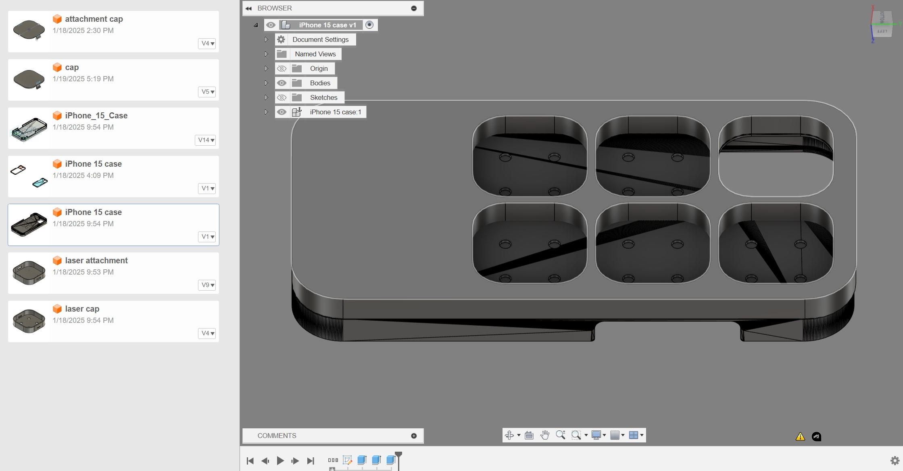

This is an ongoing project where I am experimenting with modular storage integrated directly into a smartphone case. The primary challenge here is working within the constraints of extremely tight tolerances—the difference between a part that falls out and one that snaps in is often less than a fraction of a millimeter. I have been testing several snap-fit designs to ensure the compartments stay locked in place even when the phone is dropped, but can still be opened easily when needed. It is a work-in-progress, and I am currently refining the wall thickness to ensure the case remains slim while still providing adequate impact protection.
